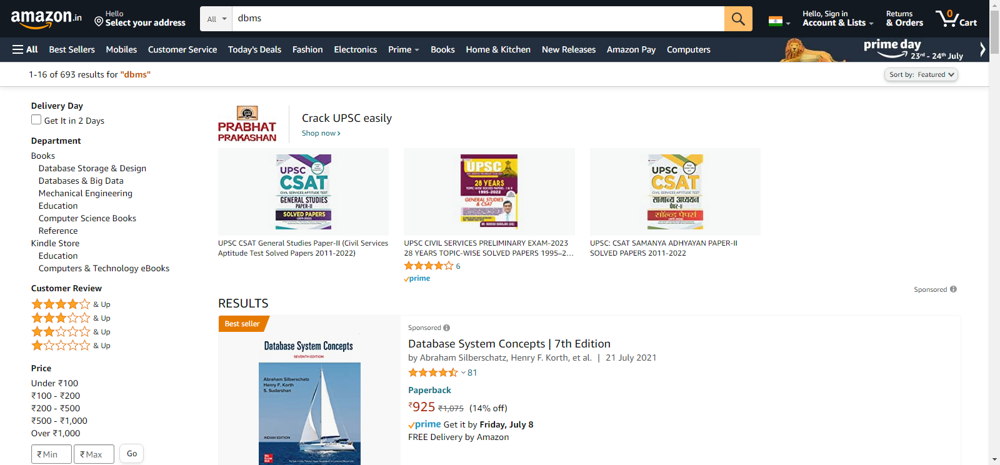

Report generated on 06-Jul-2022 at 16:08:03 by pytest-html v3.1.1
| Packages | {"pluggy": "1.0.0", "py": "1.11.0", "pytest": "7.1.2"} |
| Platform | Windows-10-10.0.19044-SP0 |
| Plugins | {"Faker": "13.14.0", "html": "3.1.1", "metadata": "2.0.1"} |
| Python | 3.10.0 |
3 tests ran in 85.59 seconds.
(Un)check the boxes to filter the results.
2 passed, 0 skipped, 1 failed, 0 errors, 0 expected failures, 0 unexpected passes| Result | Test | Duration | Links |
|---|---|---|---|
| No results found. Try to check the filters | |||
| Failed | testcases/test_amz_home.py::TestAmzHome::test_search_3___dbms____1__ | 15.00 | URL |
|
 self = <testcases.test_amz_home.TestAmzHome testMethod=test_search_3___dbms____1__>, search_word = 'dbms', page_no = '1' @data(*ut.get_csv_data("./testdata/testdata.csv")) @unpack def test_search(self, search_word, page_no): self.amzh.search_item(search_word, int(page_no)) search_data = self.amzsr.get_search_data() items = self.ut.get_items_text(search_data) > self.ut.display_data(items) testcases\test_amz_home.py:33: _ _ _ _ _ _ _ _ _ _ _ _ _ _ _ _ _ _ _ _ _ _ _ _ _ _ _ _ _ _ _ _ _ _ _ _ _ _ _ _ utilities\utils.py:24: in display_data self.assert_all() venv\lib\site-packages\softest\case.py:139: in assert_all self.fail(''.join(failure_output)) E AssertionError: ++++ soft assert failure details follow below ++++ E E ++++++++++++++++++++++++++++++++++++++++++++++++++++++++++++++++++++++ E The following failure was found in "wrapper" (utilities.utils.Utility): E +----------------------+----------------------+----------------------+ E Traceback (most recent call last): E File "C:\kiran\selenium\project4\utilities\utils.py", line 18, in display_data E self.soft_assert(self.assertTrue,len(item)>5) E File "C:\kiran\selenium\project4\testcases\test_amz_home.py", line 33, in test_search E self.ut.display_data(items) E File "C:\kiran\selenium\project4\venv\lib\site-packages\ddt.py", line 191, in wrapper E return func(self, *args, **kwargs) E File "C:\kiran\selenium\project4\venv\lib\site-packages\softest\case.py", line 62, in soft_assert E assert_method(*arguments, **keywords) E File "E:\python\Lib\unittest\case.py", line 679, in assertTrue E raise self.failureException(msg) E AssertionError: False is not true E E -+ [1/1] +- ------------------------------Captured stdout call------------------------------ 1. Database System Concepts | 7th Edition | Passed 2. DATABASE MANAGEMENT SYSTEMS (DBMS) (MU) - Second Year (S.E) Degree Course in Information Technology (IT) Engineering - Semester 3 - As Per 2020-21 Syllabus | Passed 3. AICTE Recommended| Fundamentals of Database Systems| By Pearson | Passed 4. Database Management Systems (Dbms) | Passed 5. Introduction to DBMS: Designing and Implementing Databases from Scratch for Absolute Beginners (English Edition) | Passed 6. [Gautam Bapat] ADVANCED DBMS (CBCS Pattern MCA MANAGEMENT: Semester 2) | Passed 7. DATABASE MANAGEMENT SYSTEMS (DBMS) (MU) - Second Year (S.E) Degree Course in Information Technology (IT) Engineering - Semester 3 - As Per 2020-21 Syllabus | Passed 8. Decode Distributed DBMS for GTU 18 Course (VII -CE/CSE/IT - 2170714) | Passed 9. DBMS - Database Management System | Passed 10. DBMS Handwritten Notes of Computer Science for GATE | Passed 11. MANAGEMENT OF HETEROGENEOUS AND AUTONOMOUS DATABASE SYSTEMS | Passed 12. Advanced Database Management System | Passed 13. DBMS: A Simplified Approach | Passed 14. The Top 100 DBMS MCQ Questions | Passed 15. Database Management Systems -The Detailed Version: DBMS | Passed 16. Most Important DBMS interview questions and Answers | Passed 17. Distributed DBMS for GTU 13 Course (VII - CE/CSE/IT - 2170714) | Passed 18. Learn DBMS basics in 30 days | Passed 19. DBMS | Failed 20. Advaced Oracle DBMS Packages: The Definitive Reference: 41 (Oracle In-focus Series) | Passed 21. Distributed Databases (Includes Practicals) (DT-Engineering Textbooks) | Passed 22. MySQL, 5/e, 5e | Passed -------------------------------Captured log call-------------------------------- INFO C:\kiran\selenium\project4\pages\amz_home.py:amz_home.py:41 Item Searched with keyword : dbms INFO C:\kiran\selenium\project4\pages\amz_search_results.py:amz_search_results.py:21 Item Search completed. | |||
| Passed | testcases/test_amz_home.py::TestAmzHome::test_search_1___mysql_programming____2__ | 56.01 | |
|
-----------------------------Captured stdout setup------------------------------ -----------------------------Captured stderr setup------------------------------ [WDM] - ====== WebDriver manager ====== [WDM] - Current google-chrome version is 103.0.5060 [WDM] - Get LATEST chromedriver version for 103.0.5060 google-chrome [WDM] - About to download new driver from https://chromedriver.storage.googleapis.com/103.0.5060.53/chromedriver_win32.zip [WDM] - Driver has been saved in cache [./utilities/chrome\.wdm\drivers\chromedriver\win32\103.0.5060.53] -------------------------------Captured log setup------------------------------- INFO WDM:logger.py:16 ====== WebDriver manager ====== INFO WDM:logger.py:16 Current google-chrome version is 103.0.5060 INFO WDM:logger.py:16 Get LATEST chromedriver version for 103.0.5060 google-chrome INFO WDM:logger.py:16 About to download new driver from https://chromedriver.storage.googleapis.com/103.0.5060.53/chromedriver_win32.zip INFO WDM:logger.py:16 Driver has been saved in cache [./utilities/chrome\.wdm\drivers\chromedriver\win32\103.0.5060.53] ------------------------------Captured stdout call------------------------------ 1. Web Technologies: HTML, JAVASCRIPT, PHP, JAVA, JSP, ASP.NET, XML and Ajax, Black Book | Passed 2. HTML 5 Black Book, Covers CSS 3, JavaScript, XML, XHTML, AJAX, PHP and jQuery, 2ed | Passed 3. The Joy of PHP: A Beginner's Guide to Programming Interactive Web Applications with PHP and mySQL | Passed 4. PHP Tutorials: Programming with PHP and MySQL: Learn PHP 7 / 8 with MySQL Databases for the Web | Passed 5. Php, Html, And Mariadb/mysql To Essential Algorithms, Syntax, And Control Structures Programming | Passed 6. PHP and MySQL Programming for Beginners: A Step by Step Course From Zero to Professional (Programming is Easy Book 5) | Passed 7. Dynamic Web Programming With The Latest Versions Of Today’s Core Technologies: Php, Mysql, Javascript, Css, Html5, And Key Jquery Libraries | Passed 8. Learning PHP, MySQL & JavaScript with j Query, CSS & HTML5 | Passed 9. MySQL (Developer's Library) | Passed 10. PHP & MySQL: Server-side Web Development | Passed 11. MySQL and Java Developer's Guide (Java Open Source Library) | Passed 12. Developing a React.js Edge, 2ed: The Javascript Library For User Interfaces | Passed 13. MySQL(TM): The Complete Reference | Passed 14. PHP & MySQL: Novice to Ninja, Seventh Edition (Grayscale Indian Edition) | Passed 15. Html, Css, Php, Bootstrap, Javascript And Mysql To Create A Dynamic Site | Passed 16. Learn SQL Database Programming: Query and manipulate databases from popular relational database servers using SQL | Passed 17. SQL Programming | The Ultimate Guide for Beginner's to Advance | 2022 | Passed 18. MySQL Administrator's Bible | Passed 19. Learn PHP: Learn PHP From Beginner To Advanced: Learn Mysql Book | Passed 20. Questions & Answers On C#, C++, HTML, CSS, JQuery, JavaScript, JAVA, Linux, PHP, MySQL, Python, Visual Basic Courses | Passed 21. Web Application Development - A Conceptual Approach | Passed 22. SQL in MySQL: Learn and Practice | Passed -------------------------------Captured log call-------------------------------- INFO C:\kiran\selenium\project4\pages\amz_home.py:amz_home.py:41 Item Searched with keyword : mysql programming INFO C:\kiran\selenium\project4\pages\amz_search_results.py:amz_search_results.py:21 Item Search completed. | |||
| Passed | testcases/test_amz_home.py::TestAmzHome::test_search_2___html_programming____1__ | 10.92 | |
|
------------------------------Captured stdout call------------------------------ 1. HTML Programming for Beginners: How to Learn HTML in Less Than a Week. The Ultimate Step-by-Step Complete Course from Novice to Advanced Programmer | Passed 2. Introduction to Interactive Programming on the Internet: Using HTML and JavaScript | Passed 3. C++: The Ultimate Crash Course to Learning C++ (From Basics to Advanced): 2 (Guide, C Programming, Html, Javascript, Programming, All, Internet, Coding, Css, Java, PHP) | Passed 4. Programming: HTML: Programming Guide: Computer Programming: LEARN IN A DAY! (PHP, Java, Web Design, Computer Programming, SQL, HTML, PHP) | Passed 5. Start Programming Using HTML, CSS, and JavaScript (Chapman & Hall/CRC Textbooks in Computing) | Passed 6. Beginning Web Programming with HTML, XHTML, and CSS | Passed 7. Blossom Computer Books for Kids | Part 5 - 8 | Learn Computers Fundamentals, Features and Applications like Programming in C and C++, Powerpoint, HTML, QBASIC, Virus, .NET and DBMS | Pack of 4 Books | Passed 8. Html: HTML & CSS: For Beginners: Your Step by Step Guide to Easily HtmL & Css Programming in 7 Days (Programming Languages) | Passed 9. Programming: Programming QuickStart Box Set - HTML, Javascript & CSS (Programming, HTML, Javascript, CSS, Computer Programming) | Passed 10. HTML: HTML5, JavaScript and jQuery - Learn HTML Programming FAST: The Ultimate HTML Programming Crash Course! (JavaScript, programming, Linux command line, ... HTML, CSS, C++, Java, PHP, code Book 1) | Passed 11. HTML 5 Black Book, Covers CSS 3, JavaScript, XML, XHTML, AJAX, PHP and jQuery, 2ed | Passed 12. Core Java: An Integrated Approach, New: Includes All Versions upto Java 8 | Passed 13. Programming for Beginners: 3 Books in 1- HTML+CSS+JavaScript (Basic Fundamental Guide for Beginners) | Passed 14. Programming: SQL: Programming Guide: Javascript and Coding: LEARN IN A DAY! (SQL, Wed Design, Java, Computer Programming, HTML, SQL, CSS) | Passed 15. Programming: Swift: Create A Fully Functioning App: Learn In A Day! (Apps, PHP, HTML, Python, Programming Guide, Java, App Development) | Passed 16. HTML Beginner's Crash Course: HTML for Beginner's Guide to Learning HTML, HTML & CSS, & Web Design (HTML5, HTML5 and CSS3, HTML Programming, HTML CSS, HTML for Beginners, HTML Programming) | Passed 17. HTML: Step by Step Beginners Guide to HTML (Programming for Beginners in under 8 hours!) | Passed 18. HTML Programming for Beginners: How to Learn HTML in Less Than a Week. The Ultimate Step-by-Step Complete Course from Novice to Advanced Programmer | Passed 19. A Beginner's Guide to Computer Programming Using HTML, CSS and JavaScript | Passed 20. Html, Css And Javascript To Programming Windows Store Apps | Passed 21. Coding with Javascript for Dummies | Passed 22. Beginning HTML and CSS (Wrox Beginning Guideswrox Programmer to Programmer) | Passed -------------------------------Captured log call-------------------------------- INFO C:\kiran\selenium\project4\pages\amz_home.py:amz_home.py:41 Item Searched with keyword : html programming INFO C:\kiran\selenium\project4\pages\amz_search_results.py:amz_search_results.py:21 Item Search completed. | |||